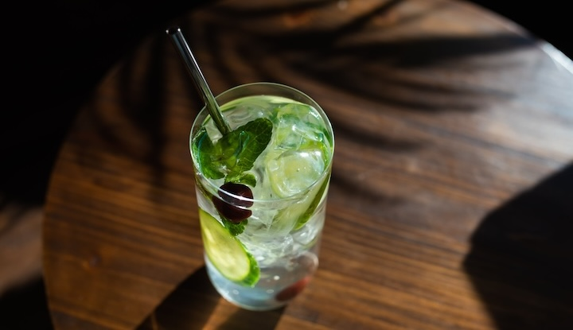

Crafting the Perfect Cucumber Mint Cooler

Growing up, beverages were often an afterthought—a quick pour of whatever was on hand. But one scorching summer, I stumbled upon a transformative drink that elevated my hydration game and became a personal favorite.
It was a lazy afternoon when I decided to experiment in the kitchen, inspired by the abundance of cucumbers and mint in my garden. As I blended them together with zesty lime and a touch of honey, the aroma was invigorating, promising a cooling respite from the relentless heat.
The first sip of the Cucumber Mint Cooler was a revelation. It was as if the garden itself had whispered secrets of refreshment into my glass. The crispness of cucumber danced with the invigorating essence of mint, while lime added a zing that awakened my taste buds.
With each sip, I felt revitalized, as if I had discovered a hidden oasis amidst the summer heat. It became my go-to drink—a soothing elixir after a long day, a companion during lazy afternoons, and a symbol of the simplicity of pleasure.
This drink wasn't just a mixture of ingredients; it was a gateway to a world where simple flavors intertwined to create something extraordinary.
Cucumber Mint Cooler
Ingredients:
- 1 cucumber, peeled and sliced
- Handful of fresh mint leaves
- 2 tablespoons lime juice
- 2 tablespoons honey or simple syrup
- Ice cubes
- Sparkling water or club soda
- Slices of lime and cucumber for garnish
Instructions
- In a blender, combine the cucumber slices, mint leaves, lime juice, and honey (or simple syrup). Blend until smooth.
- Strain the mixture through a fine-mesh sieve to remove any pulp.
- Fill glasses with ice cubes and pour the cucumber-mint mixture halfway into each glass.
- Top up the glasses with sparkling water or club soda.
- Garnish with slices of lime and cucumber. Stir gently and enjoy this refreshing cooler!